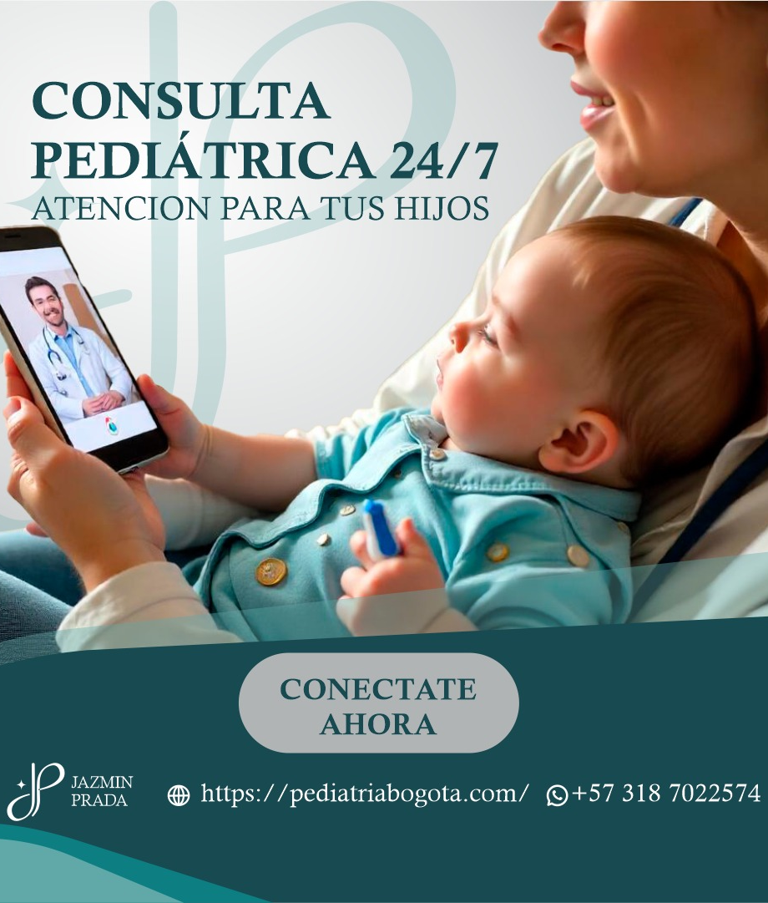

Pediatra en La Felicidad, Bogotá
Atención pediátrica especializada para familias de La Felicidad, Bogotá. Consultas presenciales (sede en Salitre), online y a domicilio para bebés, niños y adolescentes, con más de 7 años de experiencia.
Consultas & citas
Pediatra en La Felicidad
Si estás buscando un pediatra en La Felicidad, la Dra. Jazmín Prada ofrece atención pediátrica integral para bebés, niños y adolescentes en Bogotá.
Atendemos familias de La Felicidad y zonas cercanas, con consultas médicas presenciales (sede en Salitre), virtuales y servicio de pediatría a domicilio en Bogotá.
- ✔ Control del niño sano
- ✔ Atención por fiebre, tos y enfermedades comunes
- ✔ Vacunación infantil
- ✔ Orientación en lactancia y alimentación infantil
- ✔ Pediatra a domicilio en La Felicidad
Elegi la consulta que mas se adapte a tus necesidades
Preguntas frecuentes — Pediatra en La Felicidad
Información práctica para elegir consulta presencial, online o a domicilio según la necesidad de tu hijo.
Sí. La Dra. Jazmín Prada atiende familias de La Felicidad con consulta presencial, consulta online y atención a domicilio según disponibilidad. La modalidad se define según el motivo de consulta, la edad del niño, la necesidad de examen físico y la disponibilidad de agenda.
La consulta presencial conviene cuando se necesita examen físico completo: auscultar pulmones, revisar oídos y garganta, valorar hidratación, medir crecimiento, examinar abdomen, piel o desarrollo. También es una buena opción para controles de niño sano, revisión de peso y talla, dudas de alimentación, vacunas y seguimiento.
La consulta online sirve para orientación inicial, seguimiento, lectura de síntomas, dudas de lactancia o alimentación, revisión de fotos de lesiones en piel y acompañamiento cuando la familia necesita decidir qué hacer. Si se identifica algo que exige auscultación, palpación, pruebas o manejo urgente, se recomienda valoración presencial o urgencias.
La consulta incluye escucha del motivo principal, revisión de antecedentes, evolución de síntomas, medicamentos usados, alergias, alimentación, sueño y señales de alarma. Según la modalidad, se realiza examen físico o valoración dirigida por videollamada. Al final recibes un plan de manejo con indicaciones, signos de alarma y seguimiento.
Debes buscar atención urgente si hay dificultad para respirar, hundimiento de costillas, labios morados, convulsiones, somnolencia marcada, rigidez de cuello, deshidratación, vómito persistente, dolor intenso, fiebre en lactantes pequeños o deterioro rápido. Estos signos no deberían manejarse solo con mensajes.
Sí, si la valoración lo permite, se entregan indicaciones y fórmula médica. La formulación se hace con criterio pediátrico, teniendo en cuenta edad, peso, antecedentes y seguridad. Si el caso no permite formular sin examen físico, se explica el motivo y se orienta la valoración presencial.
Lleva o ten a mano carné de vacunación, peso reciente, lista de medicamentos, antecedentes importantes, alergias y una línea de tiempo de los síntomas. En bebés, ayuda anotar número de pañales, tomas, sueño y temperatura. Esa información permite una consulta más precisa.
Escríbenos por WhatsApp indicando que estás en La Felicidad, edad del niño, motivo de consulta y modalidad preferida. Con esos datos se confirma agenda, ubicación del consultorio o posibilidad de domicilio si aplica. También se informa el valor, los pasos de reserva y la preparación para la cita.